From Print to Motion (Apr 2024)
for MOTION GRAPHCS with Shira Inbar (SPRING 2024): PROJECT #3
using Adobe After Effects
For this Print to Motion project, I selected YOKKAO's Muay Thai hand wraps and created a 15-second animation using Adobe After Effects that unveils the design elements of these hand wraps. I began by planning the sequence and timing, determining the order for the elements to appear and how they should be placed on the screen to achieve a cohesive and visually appealing final image.
I incorporated sound effects that complement the visual transitions, making the overall experience more engaging and dynamic. The sound effects were chosen to amplify the impact of each movement, specifically highlighting the energy and intensity associated with Muay Thai and the atmosphere in the ring during a fight.
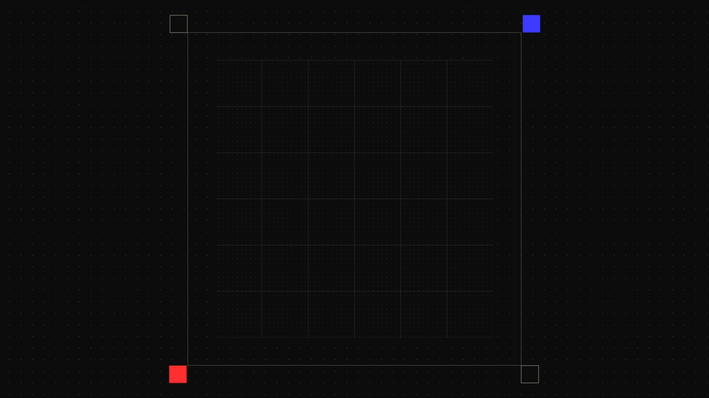
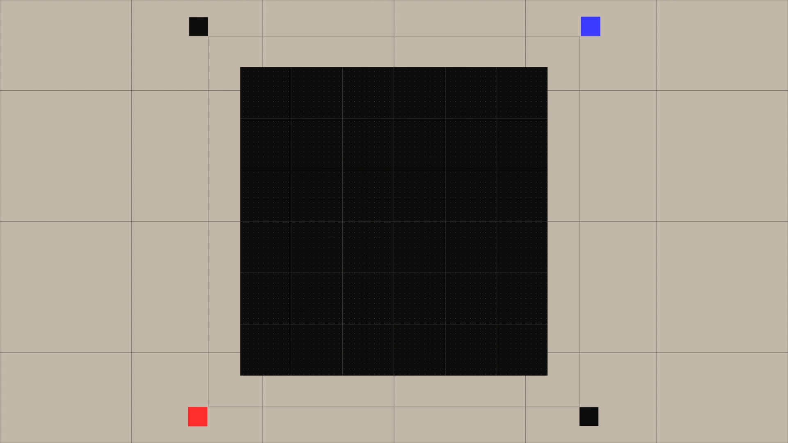
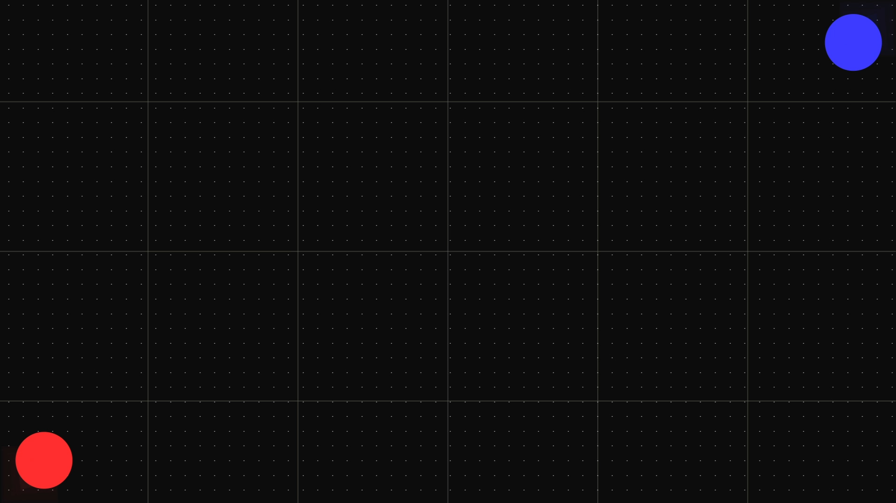
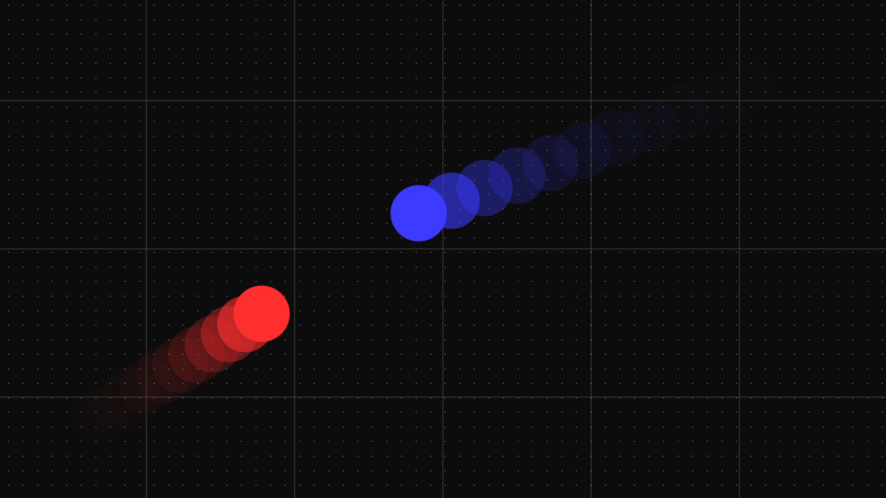
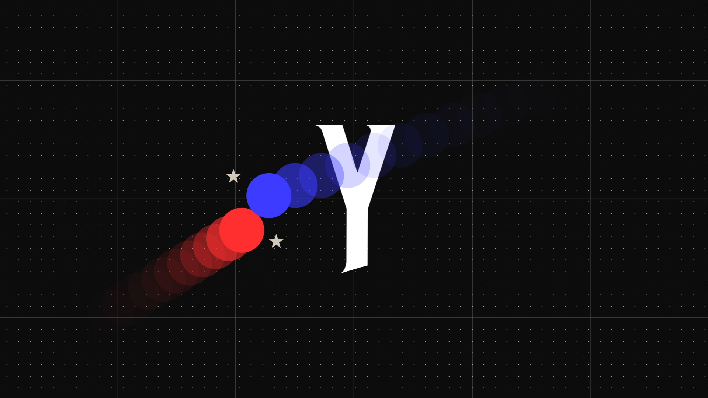
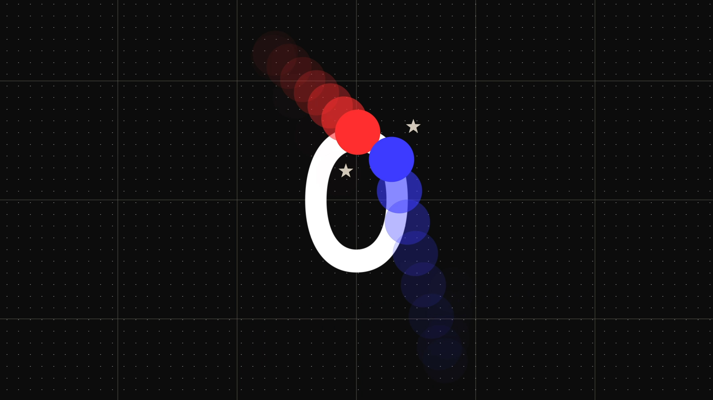
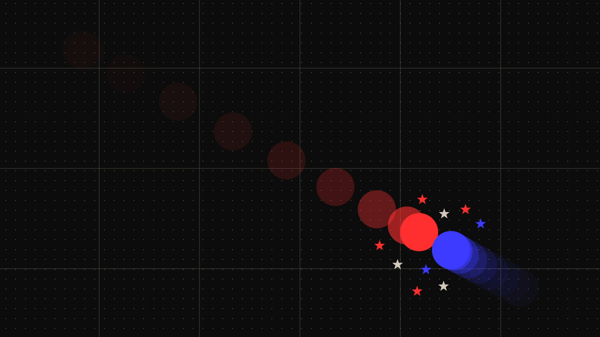
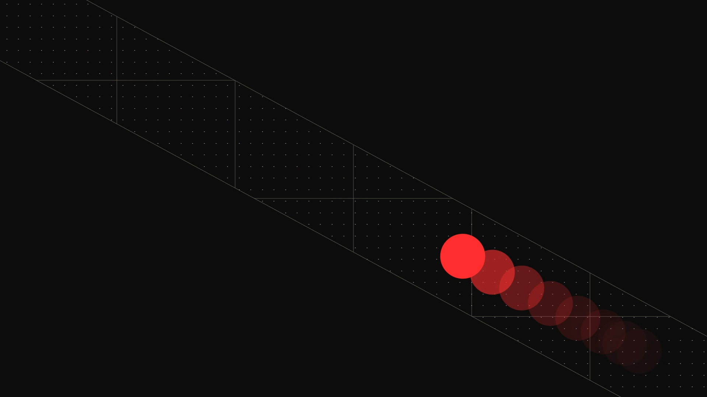
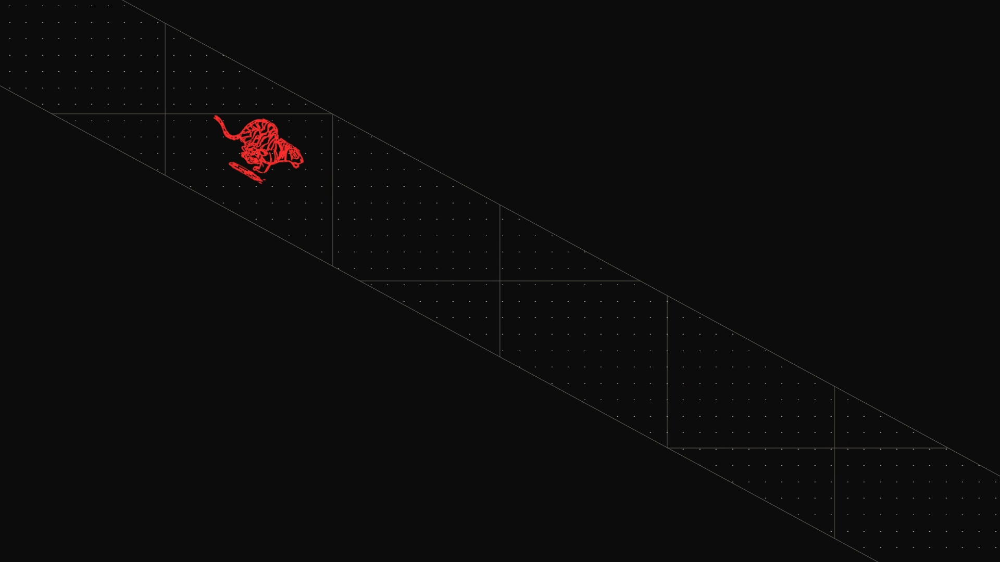
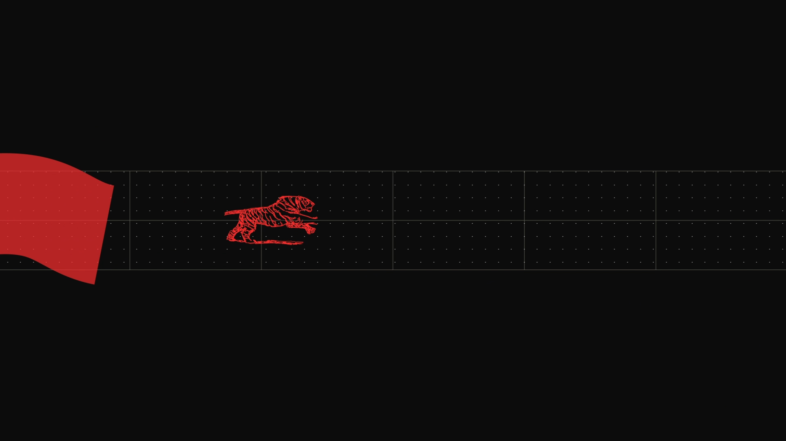
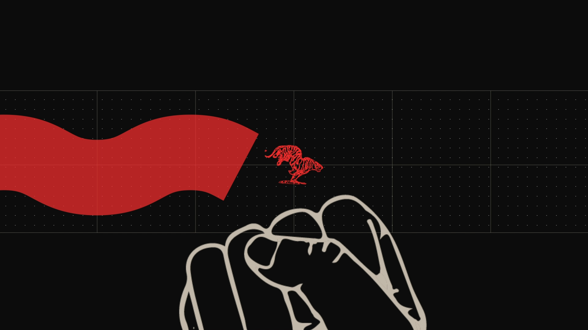
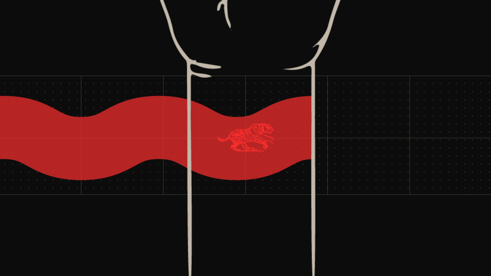
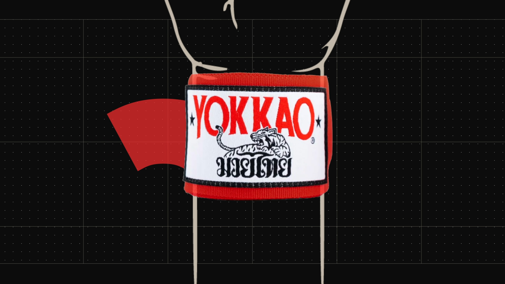
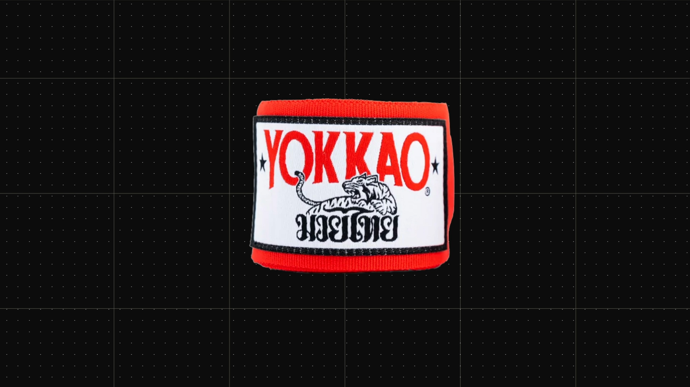